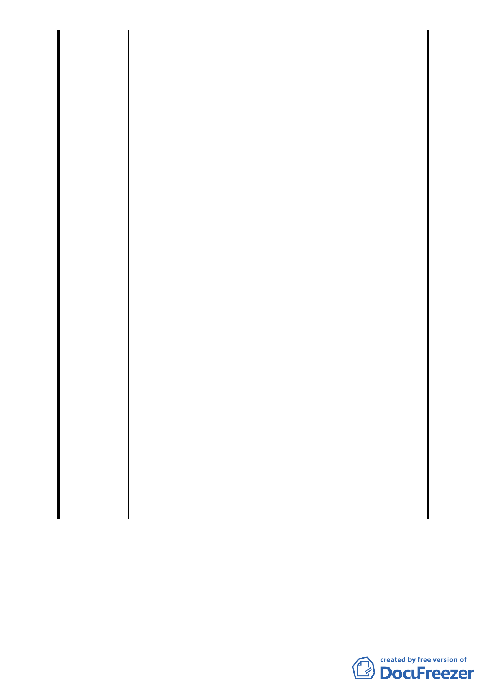

閭鄰公園按閭鄰單位設置，…但閭鄰公園每一計畫處所
最小面積不得小於○.五公頃。…五萬人口以下者，以每
千人○.一五公頃為準。』依照都市計畫通盤檢討實施辦
法規定萬星李英有 2.175 公頃的閭鄰公園設置，77 年 2
月 27 號公告之「修訂木柵區政治大學附近地區細部計畫
案(第二次通盤檢討)暨景美溪左岸以東附近地區細部計
畫(第一次通盤檢討)案」亦有載明「…計畫地區公園用地
服務水準僅達部頒標準百分之一.二一，為彌補公園用地
不足…」云云，然而該計畫地由原本 0.16 公頃減為 0.074
公頃，減少面積 871 平方公尺，減幅達 54％，必將大幅
降低公園的功能與規劃設計。
2.該公園用地為景美溪左岸萬興里唯一的一塊平面公園用
地，該區雖然鄰近河濱公園，因河濱公園屬河川行水區，
對於公園及休憩設施的設立有其限制，同時進入河濱公
園需越堤，對於社區內行動不便的長者實屬不便。
3.請考量萬興里整體規劃並依都市計畫法第 54 條之規定
『公園、體育場所、綠地、廣場及兒童遊樂場，應依計
畫人口密度及自然環境，做有系統之布置，除具有特殊
情形外，其佔用土地總面積不得少於全部計畫面積百分
之十』，該規劃應維持原有之公園用地面積以維持公園該
有的功能及全體里民之生活品質。
4.公園用地乃供不特定多數公眾使用之公共空間及公有綠
地，原計畫即是為公益及百年大計而設，今不應改弦易
轍為少數土地所有權人個人利益，變更計畫來剝奪原定
多數公眾享有綠地的權益，只為迎合少數人之商業利
益，政府為行政行為時應謹慎權衡公益與私利之分界。
5.週邊住宅購屋時已認知並信賴政府原先合法公告之公園
用地範圍及面積，依行政程序法第七條規定：『行政行
為，應以誠實信用之方法為之，並應保護人民正當合理
之信賴』，今若大幅縮減公園面積，將侵害周邊住宅居民
的信賴利益，則有違反行政程序法及行政行為上重要的
信賴保護原則之譏。
-8-